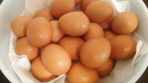
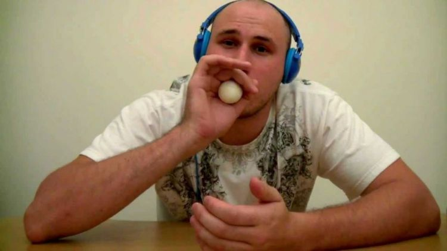
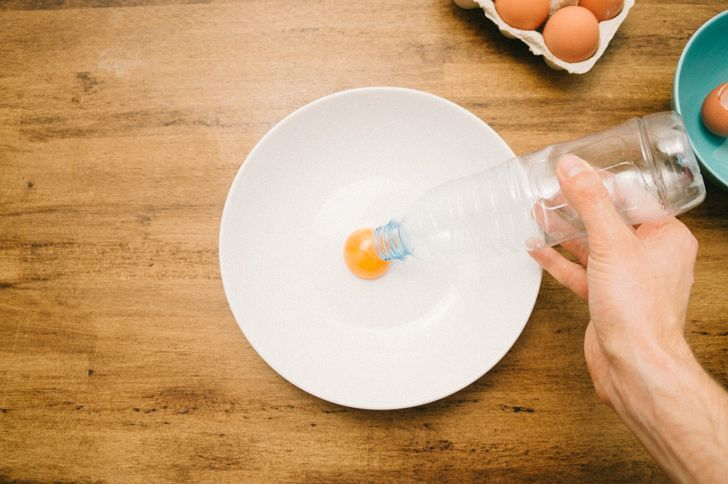
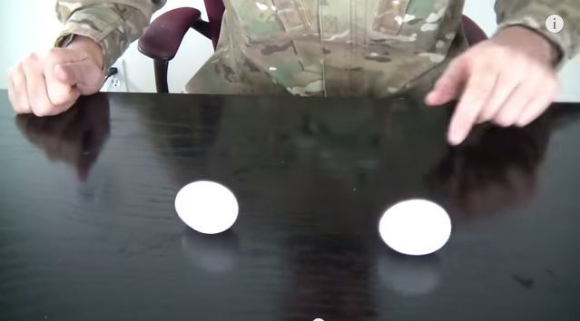
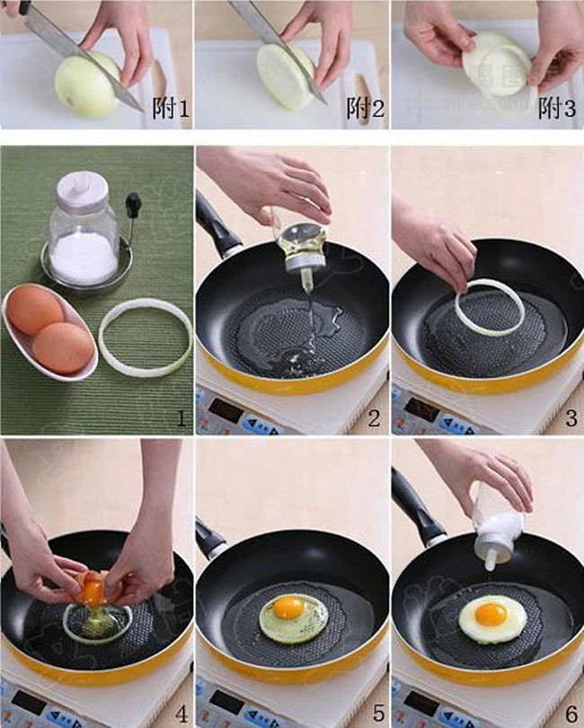
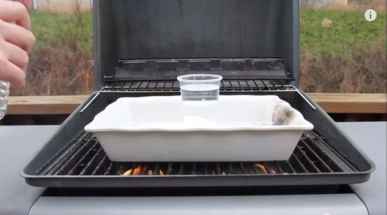
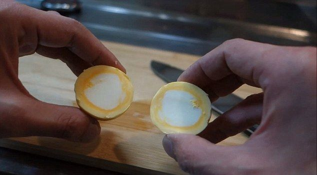
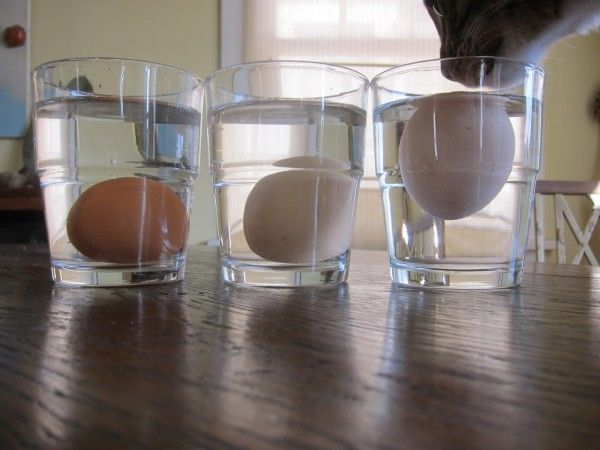

7 Trik Jenius yang Wajib Kamu Tahu Agar Urusan Masak Telur Jadi Lebih Mudah dan Menyenangkan
Telur adalah salah satu bahan makanan yang sering kamu konsumsi saban harinya. Selain bergizi, makanan ini juga mudah diolah. Gak jarang kamu akan membuatnya jadi telur rebus, telur dadar, hingga telur mata sapi yang lezat. Namun, gak sedikit dari kita yang merasa kesusahan dalam pengolahnnya. Misalnya kulit telur kerapkali akan tercampur dalam masakan. Atau mungkin kerepotan saat mengupasnya.
1. Agar waktu dan tenagamu bisa lebih hemat, sembur saja telur rebusmu pada bagian pangkal. Dijamin pasti bisa terkupas sempurna
Sebagian besar dari kita pasti biasanya mengupas telur dengan cara membuat retakan lalu mengupasnya sedikit demi seditik. Hal ini kadang bikin kamu gak sabar karena prosesnya yang lama. Nah, itu dulu! Sekarang kamu bisa coba cara yang lebih cepat dan cerdas agar segera bisa melahap telur rebusnya.
Caranya mudah, pertama-tama kamu retakan kedua ujung telur. Lalu kupas kupas cangkang bagian ujung membentuk lingkaran berdiameter 1 cm dan bagian pangkal 2 cm. Lalu kamu ambil nafas dan sembur telur pada bagian ujung dengan sekuat-kuatnya. Dijamin, cangkang telur bisa terkupas sempurna tanpa memakan waktu yang lama.
2. Memisahkan kuning telur menjadi lebih mudah dan tak makan waktu yang lama jika kamu mau menggunakan botol plastik minum kemasan
Kamu sering kesusahan untuk memisahkan kuning telur? Tenang, tanpa harus menjadi chef handal, sekarang kamu bisa membuat mendapatkan kuning telur yang sempurna hanya dengan menggunakan botol plastik saja.
Pertama-tama, kamu tuangkan telur di atas piring. Lalu ambil botol plastik dan sedikit kempeskan dengan menekan bagian permukaan menggunakan tangan. Setelah itu posisikan ujung botol di atas kuning telur dan kendorkan penyetan agar telur masuk ke dalam botol. Kemudian angkat dan pisahkan di piring lainnya. Nah, mudah ‘kan? Dijamin yolk yang kuning merona bisa terpisah dari putih telur dengan sempurna.
3. Kamu sering bingung membedakan telur matang dan telur mentah? Putarlah di atas meja untuk tahu rahasianya
Kenampakan warna cangkang telur mentah dan matang memang susah dibedakan. Hal ini seringkali bikin kamu salah menerka. Agar hal ini tak terulang, kamu bisa menggunakan trik memutar telur di atas meja untuk membedakannya.
Telur yang sudah matang akan membentuk padatang, sehingga saat diputar dia akan bergerak perlahan dan stabil di satu tepat. Sedangakan telur mentah yang masih dalam bentuk cairan akan berputar lebih cepat, tidak stabil, bergerak kesana kemari, dan tak mudah berhenti. Hal ini dikarena kuning telur yang lebih berat masih bisa berpindah pada telur yang mentah. Nah, mudah ‘kan membedakannya?
4. Telur bulat nan cantik tak hanya bisa ditemukan di restoran, sekarang kamu juga bisa kamu menciptakannya sendiri di rumah dengan bantuan bawang bombay.
Membuat telur mata sapi memang mudah, namun telur dadarmu seringkali bentuknya tak karuan. Nah, agar masakanmu terlihat bulat dan indah dipandang mata layaknya sajian di restoran, gunakan bawang bombay sebagai cetakannya. Pertama-tama, kamu potong bawang bombay sekitar 1 cm dan gunakan lapisan bagian luar sebagai cetakan. Lalu letakkan dalam minyak panas di wajan. Kemudian masukkan telur kedalamnya. Tunggu hingga matang dan jangan lupa taburi dengan garam. Simsalabim, telur dadar cantik khas restoran bisa tersaji dari dapurmu sendiri. Mudah ‘kan caranya?
5. Merebus telur tanpa panci itu bukan lagi jadi hal mustahil, karena kamu bisa menggunakan gelas plastik sebagai pengganti.
Kamu sering mendaki gunung? Ada kabar baik lho, sekarang merebus telur tanpa panci bukan lagi menjadi hal yang mustahil, karena kamu bisa manfaatkn gelas plastik bekas minuman kemasan sebagai penggantinya.
Caranya mudah dan praktis kok. Pertama – tama, kamu buat api dari tumpukan kayu. Lalu masukkan telur di dalam gelas plastik dan isi air hingga penuh. Setelah itu masukkan gelas ini ke dalam api biarkan air mendidih dan plastiknya meleleh. Namun akan lebih baik lagi jika kamu gunakan seng atau papan sebagai alas. Meski tanpa menggunakan panci, telur rebusmu akan tetap terasa lezat kok.
6. Hanya dengan menggunakan kaos kaki, telur ajaib dengan putih telur di bagian tengah bisa tersaji di meja makan.
Telur rebus itu tak selalu kudu yolk berada di tengahnya lho. Sekarang kamu juga bisa membuat posisi yang berbeda dari biasanya dengan yolk di bagian tepi, dan putih telur mengumpul di bagian tengah. Caranya gampang.
Pertama-tama kamu tutup semua permukaan cangkang menggunakan selotip. Lalu masukkan ke dalam stoking atau kaos kaki. Usahkan telur berada di bagian tengah ya. Kemudian kamu ikat kedua ujung hingga membentuk seperti permen. Tarik ke dua ujung kaos kaki dan putar beberapa kali. Setelah itu kamu rebus dalam air hingga mendidih. Simsalabim, telur ajaib bisa segera tersaji.
Cara ini juga bisa diaplikasikan saat kamu ingin membuat scrumble egg lho. Dan kamu tak perlu repot-repot lago mengkocok di dalam mangkok.
7. Agar telur yang kamu makan terjamin kesehatannya, tes saja dengan mencelupkan dalam air sekarang juga
Telur yang sehat adalah telur yang belum lama keluar dari unggas. Nah, untuk mengetesnya, kamu bisa gunakan air di dalam gelas. Jika telur tenggelam di dasar gelas, bisa dipastikan telur masih sangat fresh. Jika telur tenggelam dalam posisi berdiri tegak, itu artinya telur masih segar dan berumur 2-3 minggu. Jika telur terapung, itu artinya telur sudah tidak terlalu segar karena sudah berumur lebih dari 3 minggu.
Nah, telur yang sudah telalu lama tidak baik untuk dikonsumsi, karena biasanya sudah terindikasi adanya bakteri Salmonella E. Jadi, jika kamu ingin mengkonsumsi telur yang sehat, pastikan kamu sudah mengetesnya dengan cara ini ya.